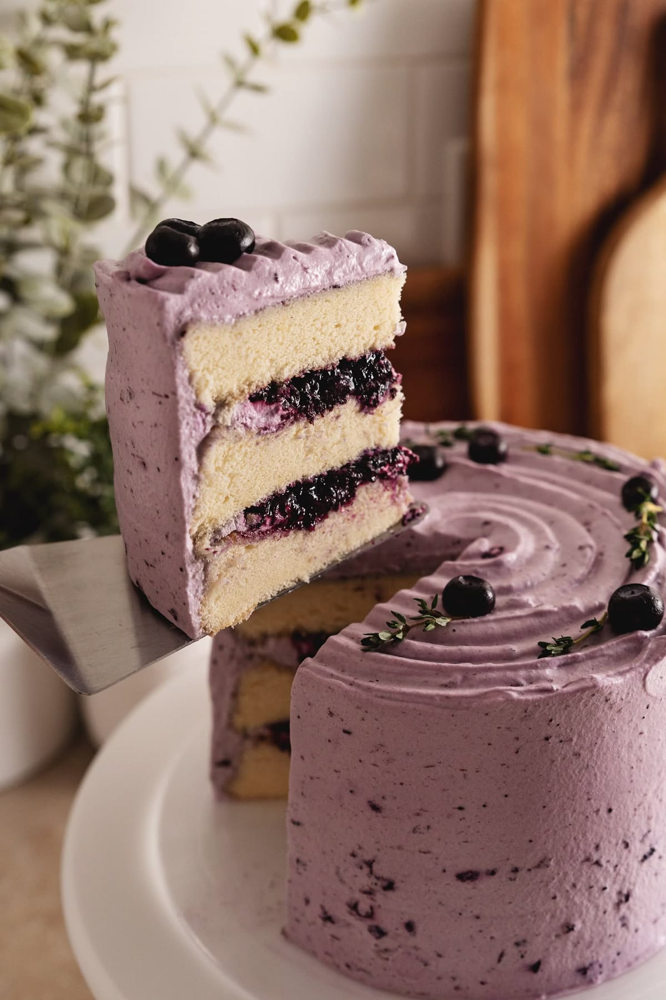

NUESTRA HISTORIA
Ítaca nació para hacer del pan una pausa especial.
Somos una panadería de producción pequeña que trabaja con ingredientes reales, tiempos de reposo y recetas pensadas para disfrutarse despacio.

LO QUE NOS HACE DIFERENTES
Hacemos sencillo lo bien hecho.
Producción artesanal
Amasamos, laminamos y horneamos en pequeñas cantidades para conocer cada pieza que sale del horno.
Ingredientes seleccionados
Buscamos mantequilla, harinas y rellenos que aporten un sabor claro, honesto y fácil de reconocer.
Ritmo cuidadoso
Los reposos son parte de la receta: permiten que el pan desarrolle aroma, textura y una miga agradable.
Preventa con propósito
Planeamos cada lote con anticipación para reducir desperdicio y entregar productos realmente frescos.
Un día dentro de Ítaca Bakery
El ritmo de la cocina, el trabajo con la masa y el cuidado en cada detalle muestran nuestra forma de vivir la panadería.
Nuestros productos
El menú reúne piezas para diferentes momentos: desayunos lentos, regalos, reuniones pequeñas y antojos de media tarde.
Croissants
Capas doradas, ligeras y crujientes con sabores clásicos y especiales de temporada.
Explorar croissantsMasas laminadas
Rollos, chocolatines y piezas rellenas que cambian según los ingredientes de la semana.
Ver opciones laminadasPan artesanal
Pan de campo, focaccia y piezas con semillas para acompañar comidas o preparar un desayuno.
Conocer los panesConoce más sobre nosotros
Ítaca comenzó con la idea de que un pan recién hecho puede cambiar el ritmo de un día. Por eso preferimos producir menos piezas, pero prepararlas con atención y compartirlas cuando están en su mejor momento.
Nos gusta lo sencillo: una buena harina, mantequilla de verdad, ingredientes de temporada y recetas que no necesitan demasiados adornos para sentirse especiales.
Probamos cada receta, revisamos los horneados y cuidamos la presentación antes de confirmar un pedido. La calidad también está en responder con claridad y respetar los tiempos acordados.
Nuestra filosofía
Hacer pan es tomarse el tiempo para hacer las cosas bien. Creemos que lo simple, cuando se hace con intención, siempre sabe mejor. Por eso cada lote tiene una historia y cada sabor tiene su propio momento.
Lo que cuidamos todos los días
Ingredientes reales
Elegimos harinas, mantequilla y frutas que hagan que cada receta se sienta honesta.
Tiempo de reposo
Respetar cada proceso permite que las masas desarrollen mejor sabor.
Cuidado al entregar
También revisamos cada pieza antes de confirmar tu pedido.
Cuatro ideas que nos guían
Menos, pero mejor
Producimos lotes pequeños para concentrarnos en cada receta y evitar desperdicio.
Procesos lentos
Dejamos reposar las masas el tiempo necesario antes de formar y hornear.
Ingredientes honestos
Preferimos sabores claros: buena harina, mantequilla, frutas y especias bien elegidas.
Atención cercana
Respondemos cada consulta con tiempos, disponibilidad y opciones claras para tu pedido.